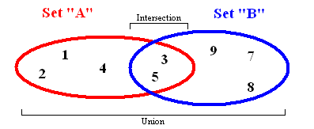
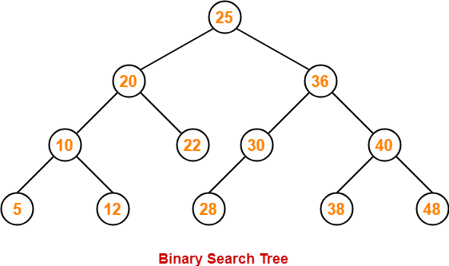
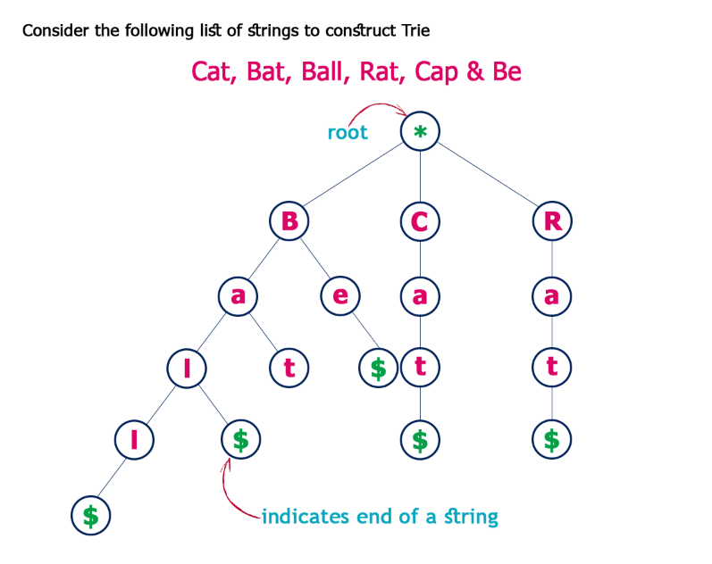

原文连接:https://www.cnblogs.com/fundebug/p/8-common-data-structure-and-javascript-implementation.html
摘要： 面试常问的知识点啊...
- 原文：常见数据结构和Javascript实现总结
- 作者：MudOnTire
Fundebug经授权转载，版权归原作者所有。
做前端的同学不少都是自学成才或者半路出家，计算机基础的知识比较薄弱，尤其是数据结构和算法这块，所以今天整理了一下常见的数据结构和对应的Javascript的实现，希望能帮助大家完善这方面的知识体系。
1. Stack（栈）

Stack的特点是后进先出（last in first out）。生活中常见的Stack的例子比如一摞书，你最后放上去的那本你之后会最先拿走；又比如浏览器的访问历史，当点击返回按钮，最后访问的网站最先从历史记录中弹出。
Stack一般具备以下方法：
push：将一个元素推入栈顶pop：移除栈顶元素，并返回被移除的元素peek：返回栈顶元素length：返回栈中元素的个数
Javascript的Array天生具备了Stack的特性，但我们也可以从头实现一个 Stack类：
function Stack() {
this.count = 0;
this.storage = {};
this.push = function (value) {
this.storage[this.count] = value;
this.count++;
}
this.pop = function () {
if (this.count === 0) {
return undefined;
}
this.count--;
var result = this.storage[this.count];
delete this.storage[this.count];
return result;
}
this.peek = function () {
return this.storage[this.count - 1];
}
this.size = function () {
return this.count;
}
}2. Queue（队列）
Queue和Stack有一些类似，不同的是Stack是先进后出，而Queue是先进先出。Queue在生活中的例子比如排队上公交，排在第一个的总是最先上车；又比如打印机的打印队列，排在前面的最先打印。
Queue一般具有以下常见方法：
enqueue：入列，向队列尾部增加一个元素dequeue：出列，移除队列头部的一个元素并返回被移除的元素front：获取队列的第一个元素isEmpty：判断队列是否为空size：获取队列中元素的个数
Javascript中的Array已经具备了Queue的一些特性，所以我们可以借助Array实现一个Queue类型：
function Queue() {
var collection = [];
this.print = function () {
console.log(collection);
}
this.enqueue = function (element) {
collection.push(element);
}
this.dequeue = function () {
return collection.shift();
}
this.front = function () {
return collection[0];
}
this.isEmpty = function () {
return collection.length === 0;
}
this.size = function () {
return collection.length;
}
}Priority Queue（优先队列）
Queue还有个升级版本，给每个元素赋予优先级，优先级高的元素入列时将排到低优先级元素之前。区别主要是enqueue方法的实现：
function PriorityQueue() {
...
this.enqueue = function (element) {
if (this.isEmpty()) {
collection.push(element);
} else {
var added = false;
for (var i = 0; i < collection.length; i++) {
if (element[1] < collection[i][1]) {
collection.splice(i, 0, element);
added = true;
break;
}
}
if (!added) {
collection.push(element);
}
}
}
}
测试一下：
var pQ = new PriorityQueue();
pQ.enqueue(['gannicus', 3]);
pQ.enqueue(['spartacus', 1]);
pQ.enqueue(['crixus', 2]);
pQ.enqueue(['oenomaus', 4]);
pQ.print();结果：
[
[ 'spartacus', 1 ],
[ 'crixus', 2 ],
[ 'gannicus', 3 ],
[ 'oenomaus', 4 ]
]3. Linked List（链表）
顾名思义，链表是一种链式数据结构，链上的每个节点包含两种信息：节点本身的数据和指向下一个节点的指针。链表和传统的数组都是线性的数据结构，存储的都是一个序列的数据，但也有很多区别，如下表：
| 比较维度 | 数组 | 链表 |
|---|---|---|
| 内存分配 | 静态内存分配，编译时分配且连续 | 动态内存分配，运行时分配且不连续 |
| 元素获取 | 通过Index获取，速度较快 | 通过遍历顺序访问，速度较慢 |
| 添加删除元素 | 因为内存位置连续且固定，速度较慢 | 因为内存分配灵活，只有一个开销步骤，速度更快 |
| 空间结构 | 可以是一维或者多维数组 | 可以是单向、双向或者循环链表 |
一个单向链表通常具有以下方法：
size：返回链表中节点的个数head：返回链表中的头部元素add：向链表尾部增加一个节点remove：删除某个节点indexOf：返回某个节点的indexelementAt：返回某个index处的节点addAt：在某个index处插入一个节点removeAt：删除某个index处的节点
单向链表的Javascript实现：
/**
* 链表中的节点
*/
function Node(element) {
// 节点中的数据
this.element = element;
// 指向下一个节点的指针
this.next = null;
}
function LinkedList() {
var length = 0;
var head = null;
this.size = function () {
return length;
}
this.head = function () {
return head;
}
this.add = function (element) {
var node = new Node(element);
if (head == null) {
head = node;
} else {
var currentNode = head;
while (currentNode.next) {
currentNode = currentNode.next;
}
currentNode.next = node;
}
length++;
}
this.remove = function (element) {
var currentNode = head;
var previousNode;
if (currentNode.element === element) {
head = currentNode.next;
} else {
while (currentNode.element !== element) {
previousNode = currentNode;
currentNode = currentNode.next;
}
previousNode.next = currentNode.next;
}
length--;
}
this.isEmpty = function () {
return length === 0;
}
this.indexOf = function (element) {
var currentNode = head;
var index = -1;
while (currentNode) {
index++;
if (currentNode.element === element) {
return index;
}
currentNode = currentNode.next;
}
return -1;
}
this.elementAt = function (index) {
var currentNode = head;
var count = 0;
while (count < index) {
count++;
currentNode = currentNode.next;
}
return currentNode.element;
}
this.addAt = function (index, element) {
var node = new Node(element);
var currentNode = head;
var previousNode;
var currentIndex = 0;
if (index > length) {
return false;
}
if (index === 0) {
node.next = currentNode;
head = node;
} else {
while (currentIndex < index) {
currentIndex++;
previousNode = currentNode;
currentNode = currentNode.next;
}
node.next = currentNode;
previousNode.next = node;
}
length++;
}
this.removeAt = function (index) {
var currentNode = head;
var previousNode;
var currentIndex = 0;
if (index < 0 || index >= length) {
return null;
}
if (index === 0) {
head = currentIndex.next;
} else {
while (currentIndex < index) {
currentIndex++;
previousNode = currentNode;
currentNode = currentNode.next;
}
previousNode.next = currentNode.next;
}
length--;
return currentNode.element;
}
}4. Set（集合）

集合是数学中的一个基本概念，表示具有某种特性的对象汇总成的集体。在ES6中也引入了集合类型Set，Set和Array有一定程度的相似，不同的是Set中不允许出现重复的元素而且是无序的。
一个典型的Set应该具有以下方法：
values：返回集合中的所有元素size：返回集合中元素的个数has：判断集合中是否存在某个元素add：向集合中添加元素remove：从集合中移除某个元素union：返回两个集合的并集intersection：返回两个集合的交集difference：返回两个集合的差集subset：判断一个集合是否为另一个集合的子集
使用Javascript可以将Set进行如下实现，为了区别于ES6中的Set命名为MySet：
function MySet() {
var collection = [];
this.has = function (element) {
return (collection.indexOf(element) !== -1);
}
this.values = function () {
return collection;
}
this.size = function () {
return collection.length;
}
this.add = function (element) {
if (!this.has(element)) {
collection.push(element);
return true;
}
return false;
}
this.remove = function (element) {
if (this.has(element)) {
index = collection.indexOf(element);
collection.splice(index, 1);
return true;
}
return false;
}
this.union = function (otherSet) {
var unionSet = new MySet();
var firstSet = this.values();
var secondSet = otherSet.values();
firstSet.forEach(function (e) {
unionSet.add(e);
});
secondSet.forEach(function (e) {
unionSet.add(e);
});
return unionSet;
}
this.intersection = function (otherSet) {
var intersectionSet = new MySet();
var firstSet = this.values();
firstSet.forEach(function (e) {
if (otherSet.has(e)) {
intersectionSet.add(e);
}
});
return intersectionSet;
}
this.difference = function (otherSet) {
var differenceSet = new MySet();
var firstSet = this.values();
firstSet.forEach(function (e) {
if (!otherSet.has(e)) {
differenceSet.add(e);
}
});
return differenceSet;
}
this.subset = function (otherSet) {
var firstSet = this.values();
return firstSet.every(function (value) {
return otherSet.has(value);
});
}
}最后，推荐大家使用Fundebug，一款很好用的BUG监控工具~
5. Hash Table（哈希表/散列表）

Hash Table是一种用于存储键值对（key value pair）的数据结构，因为Hash Table根据key查询value的速度很快，所以它常用于实现Map、Dictinary、Object等数据结构。如上图所示，Hash Table内部使用一个hash函数将传入的键转换成一串数字，而这串数字将作为键值对实际的key，通过这个key查询对应的value非常快，时间复杂度将达到O(1)。Hash函数要求相同输入对应的输出必须相等，而不同输入对应的输出必须不等，相当于对每对数据打上唯一的指纹。
一个Hash Table通常具有下列方法：
add：增加一组键值对remove：删除一组键值对lookup：查找一个键对应的值
一个简易版本的Hash Table的Javascript实现：
function hash(string, max) {
var hash = 0;
for (var i = 0; i < string.length; i++) {
hash += string.charCodeAt(i);
}
return hash % max;
}
function HashTable() {
let storage = [];
const storageLimit = 4;
this.add = function (key, value) {
var index = hash(key, storageLimit);
if (storage[index] === undefined) {
storage[index] = [
[key, value]
];
} else {
var inserted = false;
for (var i = 0; i < storage[index].length; i++) {
if (storage[index][i][0] === key) {
storage[index][i][1] = value;
inserted = true;
}
}
if (inserted === false) {
storage[index].push([key, value]);
}
}
}
this.remove = function (key) {
var index = hash(key, storageLimit);
if (storage[index].length === 1 && storage[index][0][0] === key) {
delete storage[index];
} else {
for (var i = 0; i < storage[index]; i++) {
if (storage[index][i][0] === key) {
delete storage[index][i];
}
}
}
}
this.lookup = function (key) {
var index = hash(key, storageLimit);
if (storage[index] === undefined) {
return undefined;
} else {
for (var i = 0; i < storage[index].length; i++) {
if (storage[index][i][0] === key) {
return storage[index][i][1];
}
}
}
}
}6. Tree（树）
顾名思义，Tree的数据结构和自然界中的树极其相似，有根、树枝、叶子，如上图所示。Tree是一种多层数据结构，与Array、Stack、Queue相比是一种非线性的数据结构，在进行插入和搜索操作时很高效。在描述一个Tree时经常会用到下列概念：
- Root（根）：代表树的根节点，根节点没有父节点
- Parent Node（父节点）：一个节点的直接上级节点，只有一个
- Child Node（子节点）：一个节点的直接下级节点，可能有多个
- Siblings（兄弟节点）：具有相同父节点的节点
- Leaf（叶节点）：没有子节点的节点
- Edge（边）：两个节点之间的连接线
- Path（路径）：从源节点到目标节点的连续边
- Height of Node（节点的高度）：表示节点与叶节点之间的最长路径上边的个数
- Height of Tree（树的高度）：即根节点的高度
- Depth of Node（节点的深度）：表示从根节点到该节点的边的个数
- Degree of Node（节点的度）：表示子节点的个数
我们以二叉查找树为例，展示树在Javascript中的实现。在二叉查找树中，即每个节点最多只有两个子节点，而左侧子节点小于当前节点，而右侧子节点大于当前节点，如图所示：

一个二叉查找树应该具有以下常用方法：
add：向树中插入一个节点findMin：查找树中最小的节点findMax：查找树中最大的节点find：查找树中的某个节点isPresent：判断某个节点在树中是否存在remove：移除树中的某个节点
以下是二叉查找树的Javascript实现：
class Node {
constructor(data, left = null, right = null) {
this.data = data;
this.left = left;
this.right = right;
}
}
class BST {
constructor() {
this.root = null;
}
add(data) {
const node = this.root;
if (node === null) {
this.root = new Node(data);
return;
} else {
const searchTree = function (node) {
if (data < node.data) {
if (node.left === null) {
node.left = new Node(data);
return;
} else if (node.left !== null) {
return searchTree(node.left);
}
} else if (data > node.data) {
if (node.right === null) {
node.right = new Node(data);
return;
} else if (node.right !== null) {
return searchTree(node.right);
}
} else {
return null;
}
};
return searchTree(node);
}
}
findMin() {
let current = this.root;
while (current.left !== null) {
current = current.left;
}
return current.data;
}
findMax() {
let current = this.root;
while (current.right !== null) {
current = current.right;
}
return current.data;
}
find(data) {
let current = this.root;
while (current.data !== data) {
if (data < current.data) {
current = current.left
} else {
current = current.right;
}
if (current === null) {
return null;
}
}
return current;
}
isPresent(data) {
let current = this.root;
while (current) {
if (data === current.data) {
return true;
}
if (data < current.data) {
current = current.left;
} else {
current = current.right;
}
}
return false;
}
remove(data) {
const removeNode = function (node, data) {
if (node == null) {
return null;
}
if (data == node.data) {
// node没有子节点
if (node.left == null && node.right == null) {
return null;
}
// node没有左侧子节点
if (node.left == null) {
return node.right;
}
// node没有右侧子节点
if (node.right == null) {
return node.left;
}
// node有两个子节点
var tempNode = node.right;
while (tempNode.left !== null) {
tempNode = tempNode.left;
}
node.data = tempNode.data;
node.right = removeNode(node.right, tempNode.data);
return node;
} else if (data < node.data) {
node.left = removeNode(node.left, data);
return node;
} else {
node.right = removeNode(node.right, data);
return node;
}
}
this.root = removeNode(this.root, data);
}
}测试一下：
const bst = new BST();
bst.add(4);
bst.add(2);
bst.add(6);
bst.add(1);
bst.add(3);
bst.add(5);
bst.add(7);
bst.remove(4);
console.log(bst.findMin());
console.log(bst.findMax());
bst.remove(7);
console.log(bst.findMax());
console.log(bst.isPresent(4));打印结果：
1
7
6
false7. Trie（字典树，读音同try）

Trie也可以叫做Prefix Tree（前缀树），也是一种搜索树。Trie分步骤存储数据，树中的每个节点代表一个步骤，trie常用于存储单词以便快速查找，比如实现单词的自动完成功能。 Trie中的每个节点都包含一个单词的字母，跟着树的分支可以可以拼写出一个完整的单词，每个节点还包含一个布尔值表示该节点是否是单词的最后一个字母。
Trie一般有以下方法：
add：向字典树中增加一个单词isWord：判断字典树中是否包含某个单词print：返回字典树中的所有单词
/**
* Trie的节点
*/
function Node() {
this.keys = new Map();
this.end = false;
this.setEnd = function () {
this.end = true;
};
this.isEnd = function () {
return this.end;
}
}
function Trie() {
this.root = new Node();
this.add = function (input, node = this.root) {
if (input.length === 0) {
node.setEnd();
return;
} else if (!node.keys.has(input[0])) {
node.keys.set(input[0], new Node());
return this.add(input.substr(1), node.keys.get(input[0]));
} else {
return this.add(input.substr(1), node.keys.get(input[0]));
}
}
this.isWord = function (word) {
let node = this.root;
while (word.length > 1) {
if (!node.keys.has(word[0])) {
return false;
} else {
node = node.keys.get(word[0]);
word = word.substr(1);
}
}
return (node.keys.has(word) && node.keys.get(word).isEnd()) ? true : false;
}
this.print = function () {
let words = new Array();
let search = function (node = this.root, string) {
if (node.keys.size != 0) {
for (let letter of node.keys.keys()) {
search(node.keys.get(letter), string.concat(letter));
}
if (node.isEnd()) {
words.push(string);
}
} else {
string.length > 0 ? words.push(string) : undefined;
return;
}
};
search(this.root, new String());
return words.length > 0 ? words : null;
}
}8. Graph（图）
Graph是节点（或顶点）以及它们之间的连接（或边）的集合。Graph也可以称为Network（网络）。根据节点之间的连接是否有方向又可以分为Directed Graph（有向图）和Undrected Graph（无向图）。Graph在实际生活中有很多用途，比如：导航软件计算最佳路径，社交软件进行好友推荐等等。
Graph通常有两种表达方式：
Adjaceny List（邻接列表）：
邻接列表可以表示为左侧是节点的列表，右侧列出它所连接的所有其他节点。
和 Adjacency Matrix（邻接矩阵）：
邻接矩阵用矩阵来表示节点之间的连接关系，每行或者每列表示一个节点，行和列的交叉处的数字表示节点之间的关系：0表示没用连接，1表示有连接，大于1表示不同的权重。
访问Graph中的节点需要使用遍历算法，遍历算法又分为广度优先和深度优先，主要用于确定目标节点和根节点之间的距离，
在Javascript中，Graph可以用一个矩阵（二维数组）表示，广度优先搜索算法可以实现如下：
function bfs(graph, root) {
var nodesLen = {};
for (var i = 0; i < graph.length; i++) {
nodesLen[i] = Infinity;
}
nodesLen[root] = 0;
var queue = [root];
var current;
while (queue.length != 0) {
current = queue.shift();
var curConnected = graph[current];
var neighborIdx = [];
var idx = curConnected.indexOf(1);
while (idx != -1) {
neighborIdx.push(idx);
idx = curConnected.indexOf(1, idx + 1);
}
for (var j = 0; j < neighborIdx.length; j++) {
if (nodesLen[neighborIdx[j]] == Infinity) {
nodesLen[neighborIdx[j]] = nodesLen[current] + 1;
queue.push(neighborIdx[j]);
}
}
}
return nodesLen;
}测试一下：
var graph = [
[0, 1, 1, 1, 0],
[0, 0, 1, 0, 0],
[1, 1, 0, 0, 0],
[0, 0, 0, 1, 0],
[0, 1, 0, 0, 0]
];
console.log(bfs(graph, 1));打印：
{
0: 2,
1: 0,
2: 1,
3: 3,
4: Infinity
}最后，推荐大家使用Fundebug，一款很好用的BUG监控工具~
本文旨在向广大前端同学普及常见的数据结构，本人对这一领域也只是初窥门径，说的有差池的地方欢迎指出。也希望大家能打牢基础，在这条路上走的更高更远！
关于Fundebug
Fundebug专注于JavaScript、微信小程序、微信小游戏、支付宝小程序、React Native、Node.js和Java线上应用实时BUG监控。 自从2016年双十一正式上线，Fundebug累计处理了20亿+错误事件，付费客户有阳光保险、核桃编程、荔枝FM、掌门1对1、微脉、青团社等众多品牌企业。欢迎大家免费试用！